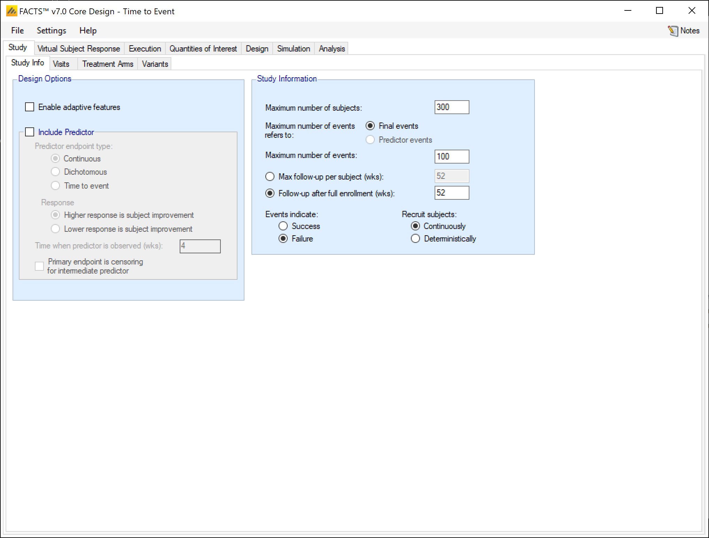
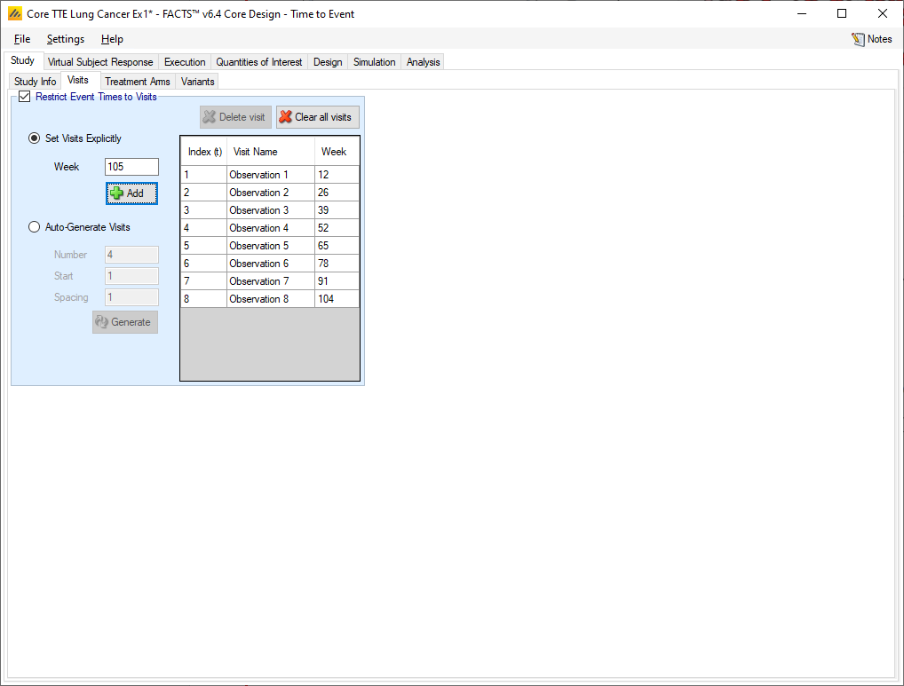
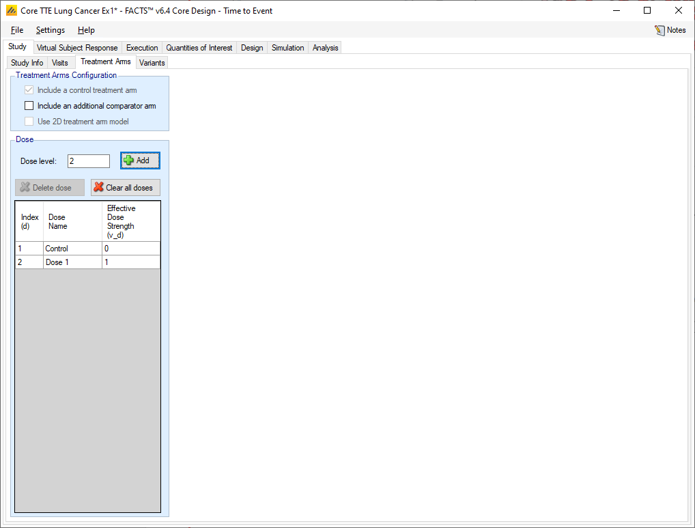
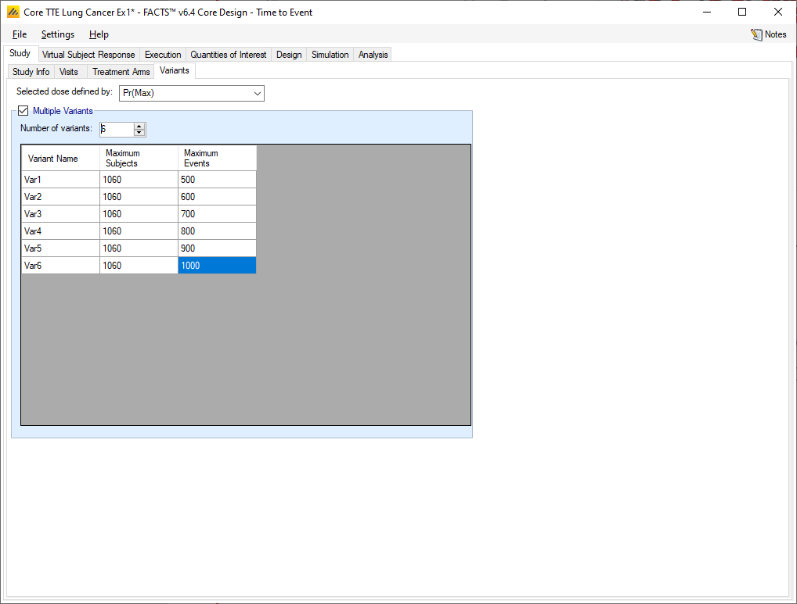

Time-to-Event Output
Description of the simulation tab and the results generated by simulations.
1 The Study tab

1.1 Study Info
The Study Info sub-tab provides parameters for specifying rules and methods for common clinical trial simulation features. These include whether interim analyses will be simulated, if a predictor is used to impute subject event times, sample size, maximum number of events, follow-up times, and more.
1.1.1 Design Options:
1.1.1.1 Enable adaptive features
Whether the design is adaptive or fixed. If “adaptive features” are enabled, some adaptive specific parameters and tabs are added to the GUI, such as the tabs for defining interims, early stopping criteria, and adaptive allocation.
1.1.1.2 Include Predictor
Whether an early predictor is to be included in the design. An early predictor can be a continuous or dichotomous outcome, or a precursor event. The user specifies whether higher score, a response, or precursor event is a positive or negative outcome for the subject (this is used in the comparison with the CSD – not in the relation between the predictor and the final event, that is solely down to the parameters entered on the virtual subject response tabs). For continuous or dichotomous predictors, the user specifies after what time (weeks after randomization) the predictor is observed. For all predictors a clinically significant difference can be specified which can be used to specify early stopping or final evaluation conditions on the predictor. If the predictor is continuous, the value is delta on the mean difference between a study arm and control, if dichotomous, the value is the difference in rate and if the predictor is a precursor event then the value is a clinically significant hazard ratio.
If an early predictor is included, then a ‘Predictor’ tab is added to the Virtual Subject Response tabs, and a Predictor tab is added to the Design tabs, with a predictor Dose Response sub-tab and Relationship to Endpoint sub-tab.
1.1.2 Study Information
1.1.2.1 Maximum number of subjects
The maximum number of subjects that can be recruited into the study and the maximum number of events to be observed (if there is a time-to-event predictor, the maximum events to be observed can be specified to be the predictor events).
1.1.2.2 Maximum number of events refers to
Determine what counts as an event when determining when the trial should be stopped due to reaching the number of events specified in the “Maximum number of events” box. The options are “Final events” and “Predictor events.”
1.1.2.3 Maximum number of events
The maximum number of events (type of event specified above) allowed in the trial. When this value is reached the trial moves on to the final analysis stage.
1.1.2.4 Max follow-up per subject (wks)
The maximum follow-up time per subject. No subject will be followed for longer than this. If the study does not stop early it will stop when every subject recruited has reached their maximum follow-up time or has had an event. With this option all subjects have the same maximum follow-up.
1.1.2.5 Follow-up after full enrollment (wks)
The follow-up time after full enrolment. If the study does not stop early then it will stop the specified time after full enrolment or when every subject has had an event. With this option subjects recruited earlier may be follow-up for longer than subjects recruited later in the trial and the overall amount of exposure is maximized.
1.1.2.6 Events indicate
Whether an event indicates a success (time to recovery) or a failure (death or progression) for a subject. The value specified here also dictates the direction of frequentist tests and predictive probabilities.
1.1.2.7 Recruit subjects
Dictate whether subjects are recruited sequentially or deterministically.
If recruited sequentially, the user recruitment will be simulated stochastically using a Poisson process, using the parameters specified on the Execution > Accrual tab.
If recruited deterministically, the user specifies the recruitment date of every subject recruited by uploading a file of dates on the Execution > Accrual tab.
1.2 Visit tab
If events can be observed whenever they occur (up to the end of follow-up) then there is no need to specify a visit schedule. But if events can only be known at a visit then knowledge of the timing of the event has to be censored by the visit schedule.
The last visit in the schedule is taken to be when the final endpoint observed. Visits can be specified one at a time, by entering the required week value for the visit and then clicking ‘Add’, or by specifying a regularly spaced sequence: select ‘Auto-Generate’, enter the number of visits, the week of the first visit and the number of weeks between each visit and then click ‘Generate’.
Individual visits can be deleted by selecting them in the list and clicking ‘Delete’. The default visit names can be edited by clicking the visit name and typing. The week and the index cannot be changed. Should it be necessary to change the week of a visit, the incorrect visit must be deleted and a new one with the correct week number added.

1.3 Treatment Arms
The Treatment Arms sub-tab provides an interface for specifying the various dose levels, Control and Additional Comparator arms.
The user may add doses either explicitly or by auto-generation. The user may also edit the Dose Names within the table by double clicking on any existing dose name.
Note that Dose Levels are the relative strength values of doses and are the values used in the dose response model analysis (νd). They are not absolute and have no units. Dose levels may not be edited directly[^2] – to change a dose level, delete the entry and add a new dose with the correct level.

Control and Active Comparator: the control arm need not be placebo; it too may be an active treatment arm. There are only two differences between the “control arm” and an “active comparator arm”:
The default quantities of interest that are already pre-specified, are in terms of comparison to the control:
“Predictive probabilities of future success” use the estimate of the response on the control arm to predict the response on the control arm in the next trial.
1.4 Variants
On this tab the user can specify that a number of design variants should be created. Currently the only design feature that can be changed is the sample size (maximum number of subjects and events).
If “multiple variants” is checked then the user can specify that simulations setups should be created for each simulation scenario with versions of the design with a different maximum number of subjects and/or events.
The user enters the number of variants they wish to create. Then in the resulting table, enter different “Maximum Subjects” and “Maximum Events” for each variant. On the simulations tab FACTS will then create a copy of all the scenarios to run with each variant.
In FACTS Core designs, as well as Success and Failure rates, a major Operating Characteristic that we often wish to estimate is the ability of the design (if the trial is successful) to select a good treatment arm. To enable FACTS to report this the user can specify on this tab a “Target QOI” such as the Max, an EDx, or MED as the arm selection criterion. This is specified on this tab by selecting the required QOI on the “Selected dose defined by” dropdown list. It may of course be necessary to go to the “Quantities of Interest” tab first and specify the required Target QOI before returning to this tab to select it.
To use this feature, there is an additional specification step required, the user must specify on the Virtual Subject Response > Explicitly Defined > Dose Response profiles which of the treatment arms “Should succeed”, that is, it would constitute a ‘correct selection’ by the design in that scenario.
